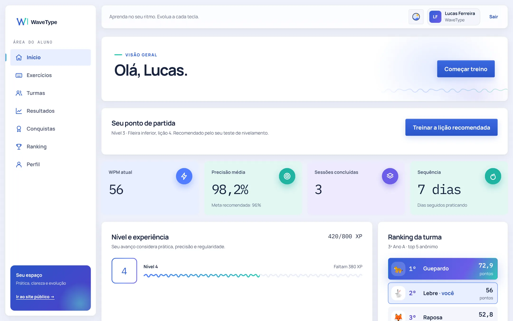
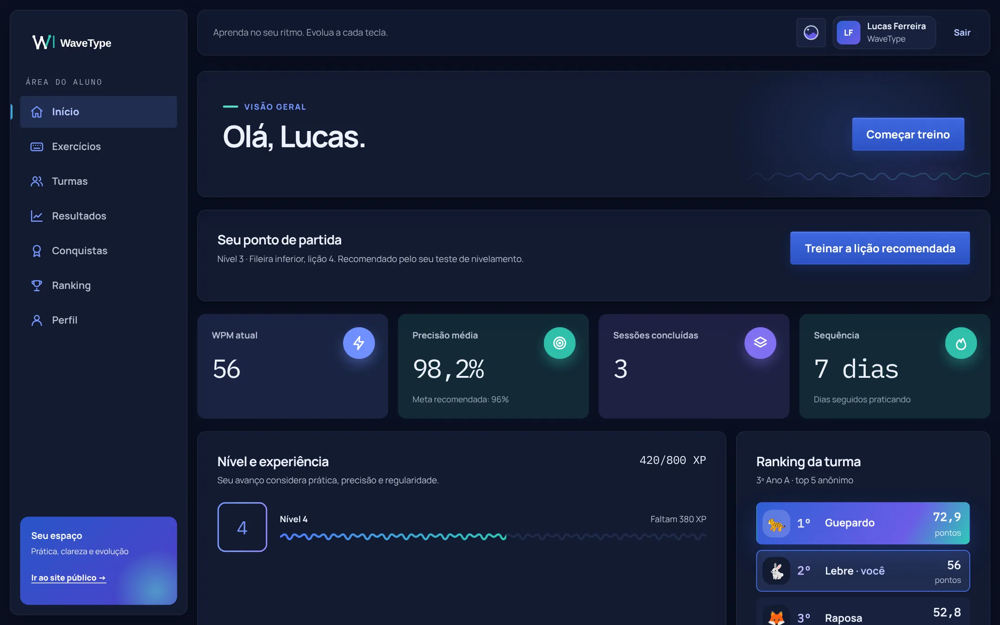
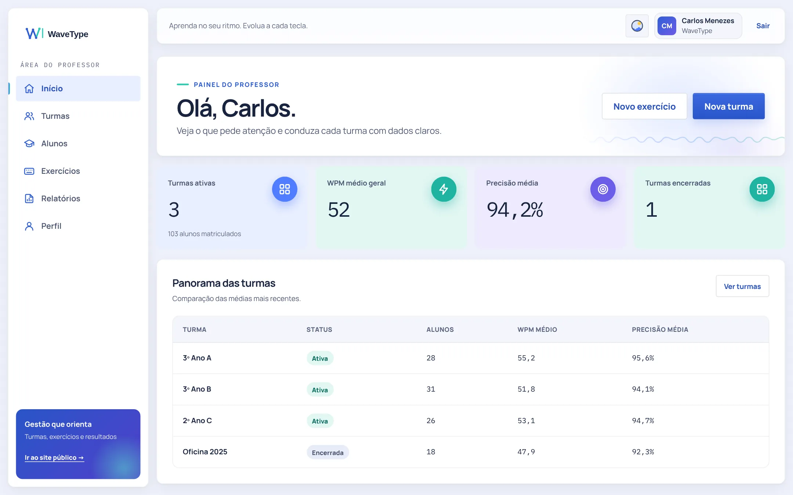
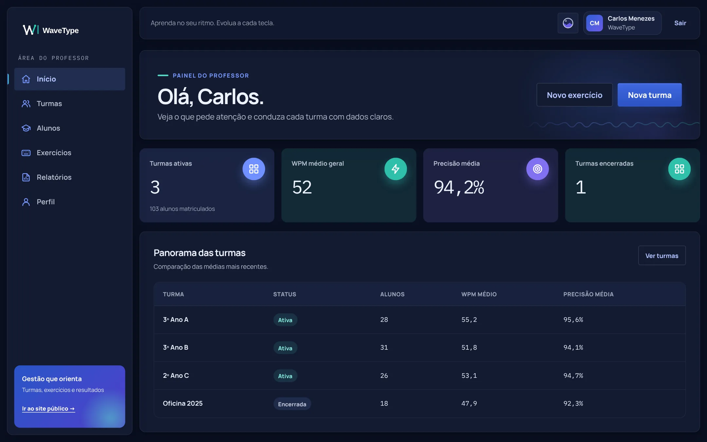
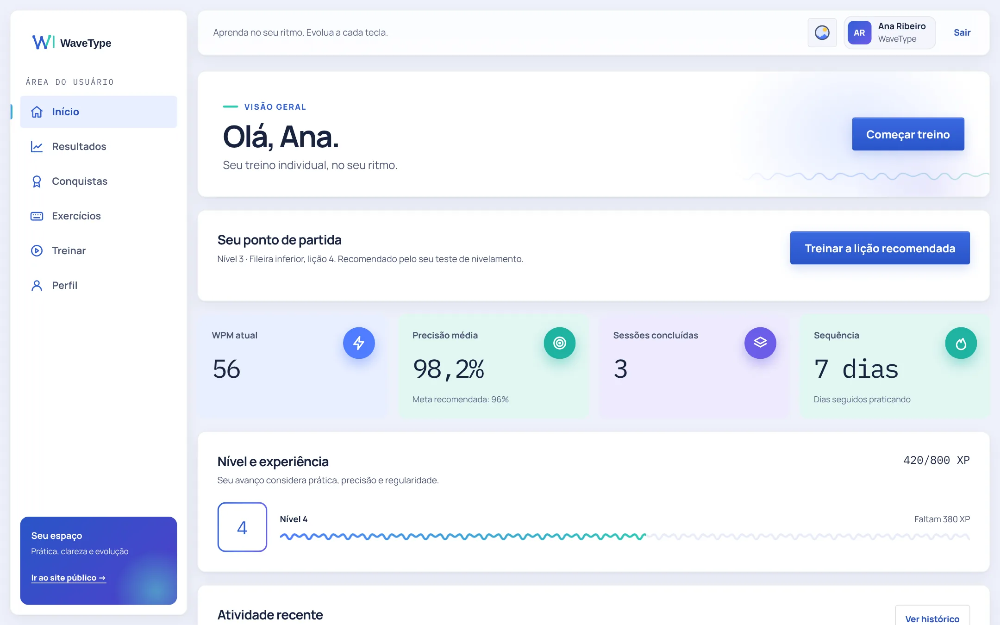
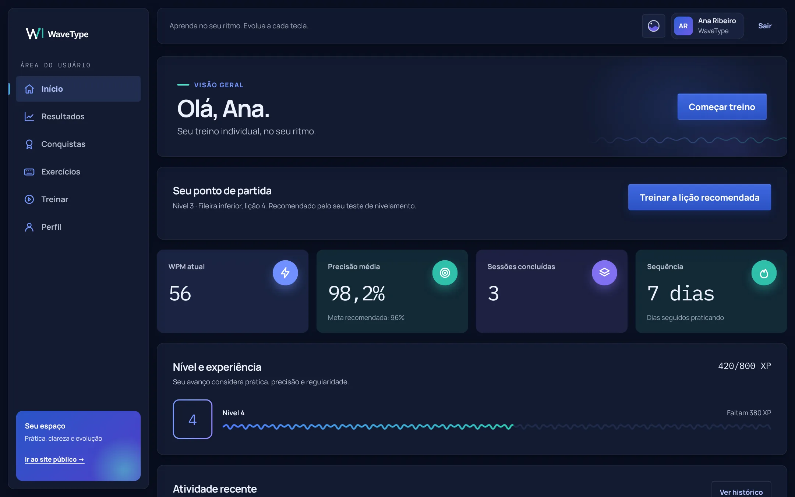

Prática gratuita · sem cadastroDigite agora.
Digite agora.
Veja onde evoluir.
A experiência começa aqui: pressione a primeira tecla no computador ou toque no texto pelo celular.
0WPM
100%precisão
30segundos
Digite as palavras mostradas. Use espaço para avançar e Backspace para corrigir. Pressione Escape para reiniciar.
Esc recomeça o teste · Não sabe por onde começar? Teste seu nívelSem conta · nenhum dado pessoal solicitado
Leitura do teste
Seu resultado, explicado
Veja o que manter e o que praticar no próximo teste.
Ritmo durante o testePrimeiro resultado neste dispositivo
WPM brutoinício30 segundos
Continue construindo ritmo
Complete o teste para receber uma recomendação personalizada.
Letras para praticar
—
0 corretos0 incorretos0 omitidos0 extras
Nenhuma palavra problemática identificada.
Uma plataforma, experiências certas
Tudo o que importa, no lugar certo.
A WaveType não é apenas um cronômetro de digitação. Ela conecta prática imediata, acompanhamento individual e gestão de turmas em uma experiência leve — sem transformar o aprendizado em um painel complicado.
01 · VISITANTE
Pratique agora
Entre, digite e entenda seu resultado sem criar uma conta.
Voltar ao teste ↑ 02 · ALUNOVeja sua evolução
Exercícios, histórico, conquistas e ranking em uma sequência clara.
Explorar demonstração → 03 · PROFESSORConduza sua turma
Organize alunos, publique exercícios e identifique quem precisa de apoio.
Explorar demonstração →
A plataforma antes do login
Você sabe o que vai encontrar.
O produto se apresenta com transparência. Estas são as telas reais de cada área, com dados de exemplo. Passe pelas imagens ou crie uma conta quando quiser manter seu histórico.






Do primeiro teste à evolução real
01
02
03
Uma jornada simples para aprender melhor.
Digite
Comece imediatamente com palavras ou frases, no seu nível e tempo.
Entenda
Receba uma leitura clara de velocidade, precisão, consistência e pontos de atenção.
Evolua
Salve resultados, cumpra exercícios e acompanhe a mudança ao longo do tempo.